Explore Zaragoza
A Brief History
Zaragoza stands where Roman Caesaraugusta and later Visigothic and Islamic Al-Andalus cities faced the Ebro River. The Basilica of Our Lady of the Pillar and the Aljafería palace record Christian reconquest and Aragonese crown power before the region joined modern Spain. Expo 2008 spurred new bridges and riverside parks along the Ebro. Municipal archives, parish records, and surviving architecture help explain how the city connected to wider regional trade routes, court patronage, and modern civic rebuilding after industrial and wartime change.
Attractions Map
Top Sights & Activities
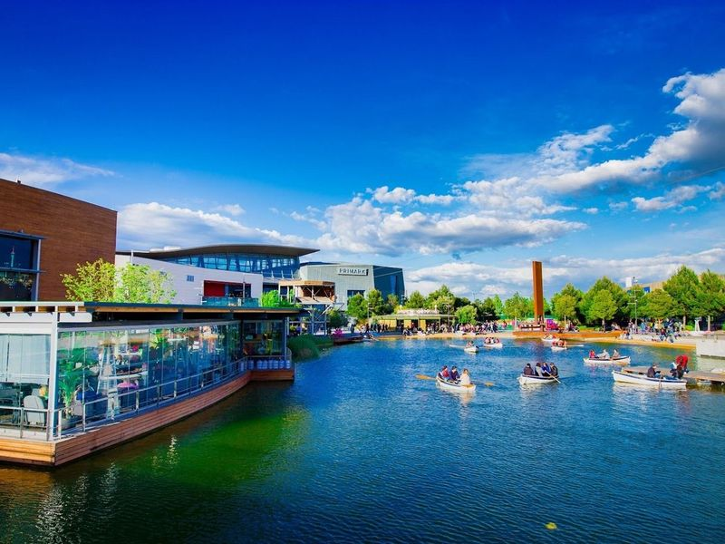
Puerto Venecia
Puerto Venecia in Zaragoza is a modern shopping and dining destination that offers a unique escape to contemporary amenities. It features large stores, including the only Starbucks in the area, where visitors can find items they've been searching for. The mall also has a toy store that delights kids and various eateries and specialty shops. Additionally, it boasts a picturesque lake with boats for rent, adding to its allure as an ideal place to spend an afternoon.
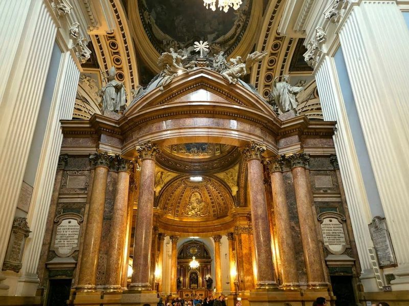
Cathedral-Basilica of Our Lady of the Pillar
The Cathedral-Basilica of Our Lady of the Pillar is a Baroque structure adorned with vibrant cupolas and renowned for its shrine to the Virgin Mary. Inside, visitors can admire frescoes by Goya. While it's worth exploring this architectural gem, nearby villages like Aninon and Torralba de Ribota boast exceptional examples of Mudejar architecture, such as the Church of Lady of Castillo and the Church of San Felix.
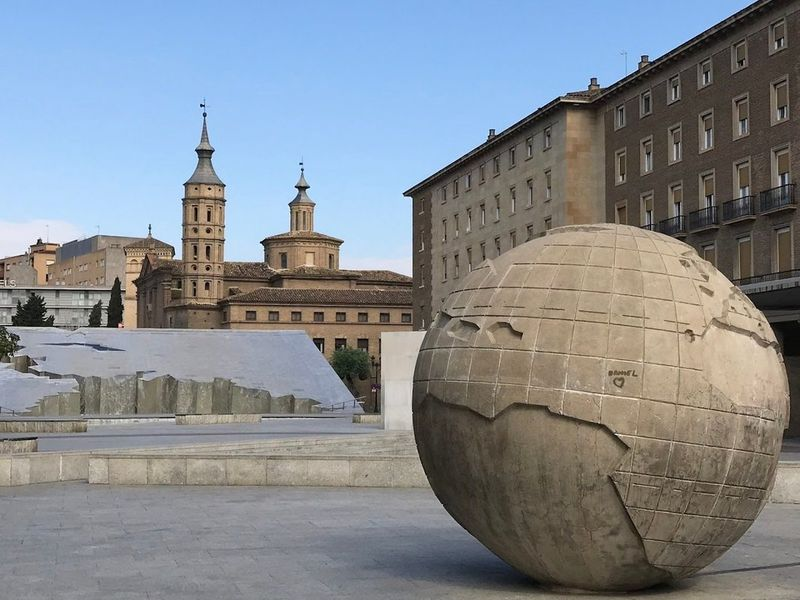
Fuente de la Hispanidad
Located at Plaza Nuestra Senora del Pilar in Zaragoza, the Fuente de la Hispanidad is a remarkable fountain built in 1991 to commemorate Christopher Columbus's discovery of the Americas. Designed by sculptor Francisco Rallo Lahoz, it features a central figure of Columbus surrounded by sculptures representing indigenous cultures from the Americas.
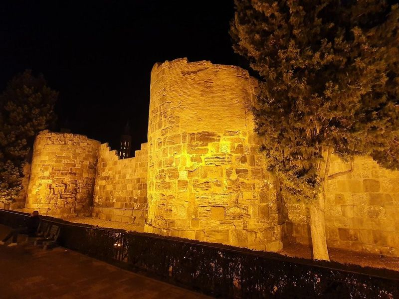
Murallas Romanas de Zaragoza
The Murallas Romanas de Zaragoza, also known as the Roman Walls of Caesaraugusta, are a significant part of Zaragoza's historical and cultural heritage. These ancient walls once encircled the central area of the city, stretching approximately 2 miles with numerous towers and main gates. Constructed with alabaster and limestone ashlars, some sections were up to 7 meters thick.
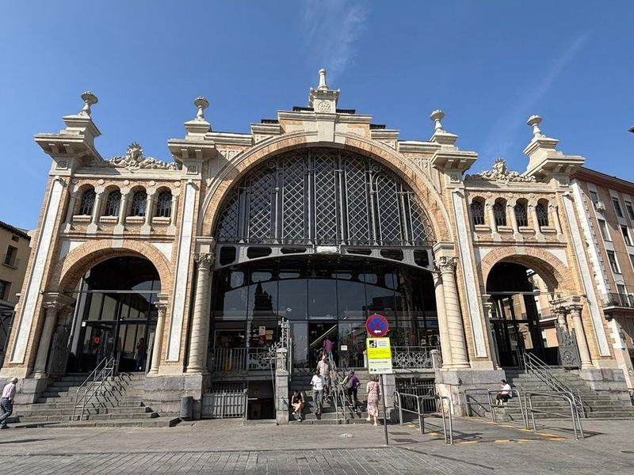
Mercado Central de Zaragoza
When exploring Zaragoza, a must-visit is the Mercado Central de Zaragoza, a vibrant marketplace that has been at the heart of the city since its opening in 1903. This structure showcases beautiful iron and glass architecture typical of the 19th century, creating an inviting atmosphere for visitors. Inside, be greeted by a sensory feast—an array of fresh produce bursting with color, along with regional delicacies like meats, cheeses, and fish.
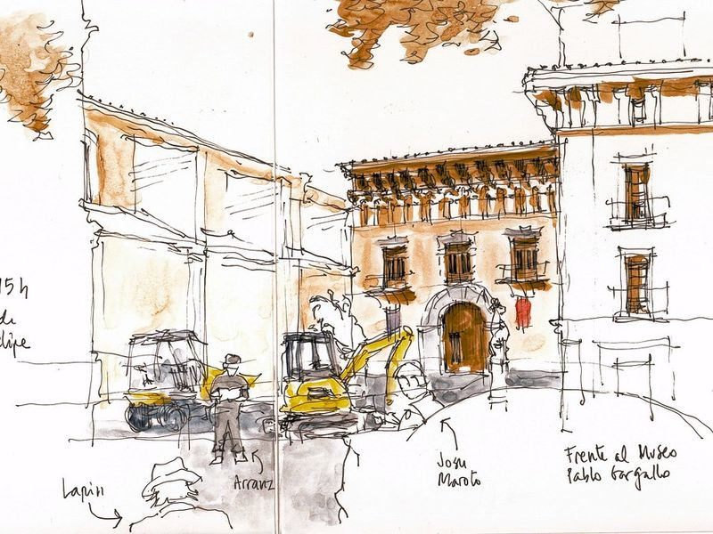
San Felipe Square
The site forms part of San Felipe Square's documented civic and cultural landscape within Zaragoza, with archives and visitor information available from municipal or regional heritage authorities. The site forms part of San Felipe Square's documented civic and cultural landscape within Zaragoza, with archives and visitor information available from municipal or regional heritage authorities.
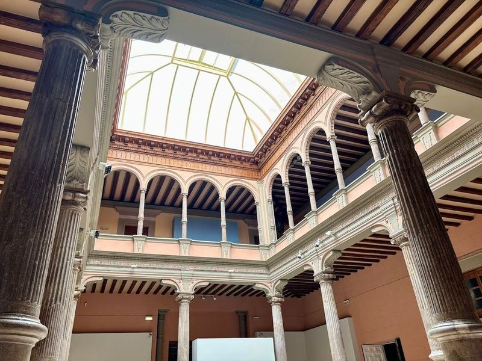
Palacio de Sástago
The Palacio de Sastago, located in the centre of Zaragoza, is an elegant Renaissance palace which is currently used as a government building. The interior patio is home to an art gallery, offering visitors a chance to admire some pieces of art. Additionally, the palace regularly hosts interesting cultural exhibitions.
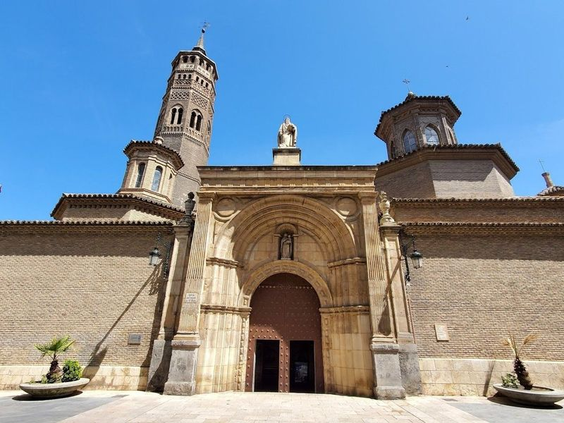
Parish Church of San Pablo
The Parish Church of San Pablo, also known as Iglesia de San Pablo, is a historic church in Zaragoza with a rich heritage dating back to the 13th century. It features a captivating blend of Gothic and Moorish architectural styles. Situated in the traditional San Pablo neighborhood, it holds significant cultural and religious importance as the third most important Catholic Church in Saragossa city.
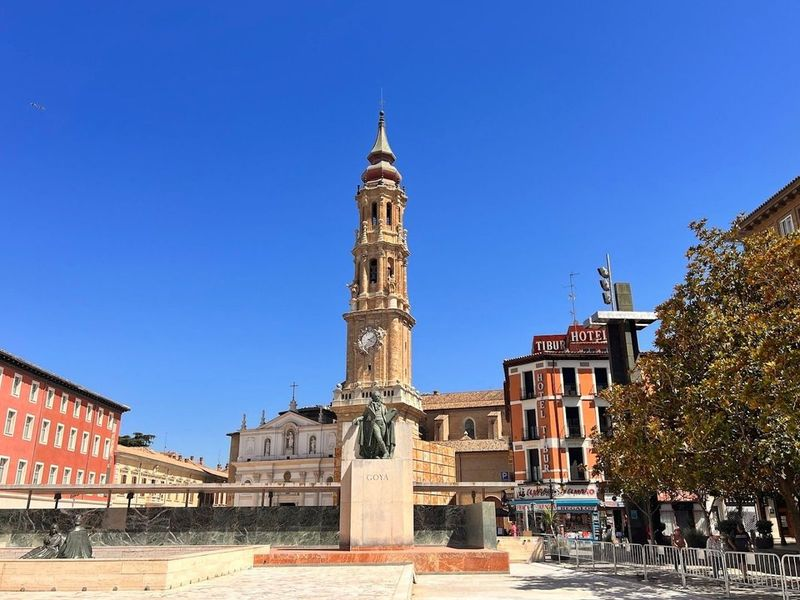
Cathedral of the Savior of Zaragoza
The Cathedral of the Savior of Zaragoza, also known as La Seo, is a architectural marvel that combines Romanesque, Gothic, and Baroque styles. Situated on Plaza de la Seo, it holds historical significance as it was built on the site of one of the first mosques during Moorish rule in Aragon. Over the centuries, it has undergone various renovations and additions reflecting Mudejar, Gothic, Renaissance, and Baroque influences.
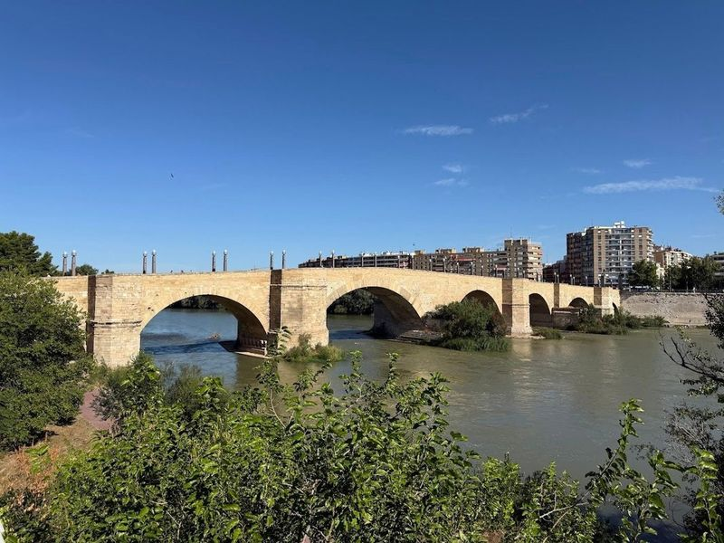
Stone Bridge
The Stone Bridge Zaragoza, also known as Puente de Piedra, is a historic 15th-century bridge that spans the Ebro River and serves as an landmark in the city. Adorned with imposing stone lion statues, this picturesque bridge offers views of Zaragoza and the river, making it a popular destination for both locals and tourists. Visitors can take leisurely strolls across the bridge, capturing photographs of the scenic surroundings.
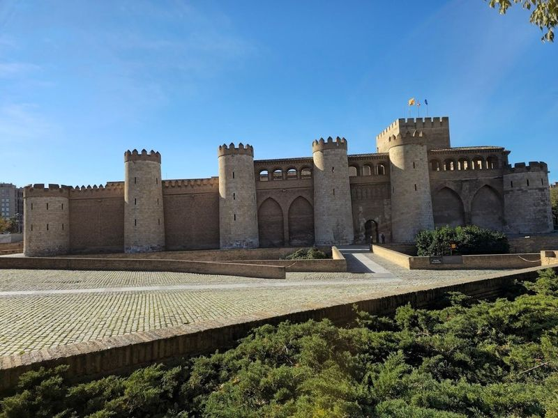
Aljafería Palace
Aljafería Palace, also known as Palacio de la Aljaferia, is a must-visit in Zaragoza. This 11th-century palace serves as the seat of the Aragonese Parliament and offers guided tours. The palace's fortified exterior contrasts with its interior featuring Mudejar art declared a UNESCO World Heritage site. Inside, visitors can admire the myrhab, alveolate arches, an orange tree patio, and the golden hall.
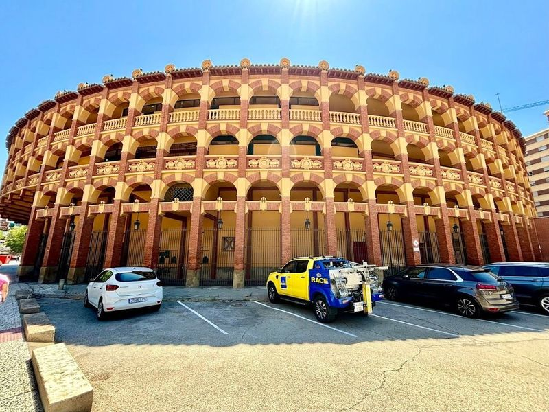
Plaza de Toros de la Misericordia
Plaza de Toros de la Misericordia is an impressive 18th-century bullring known for its striking exterior featuring tiers of colonnaded brick archways. Also referred to as the coso de la misericordia, it was constructed in the early 1900s and stands out as the only bullring in Spain with a retractable cover, allowing visitors to enjoy events even on rainy days.
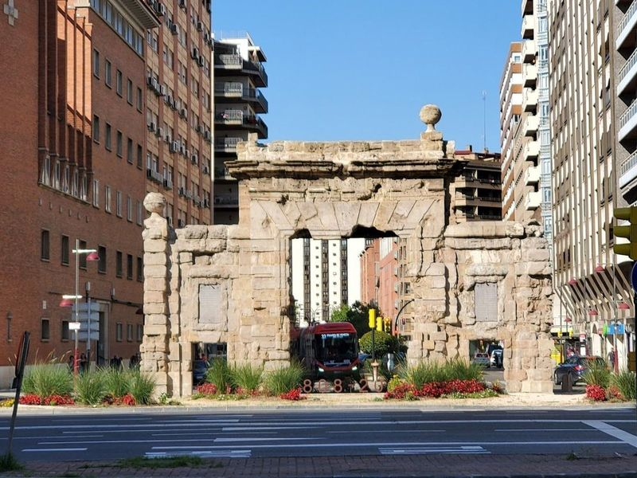
Puerta del Carmen
Nestled within the rich tapestry of Zaragoza's history, Puerta del Carmen stands as a remarkable remnant of the city's early 19th-century fortifications. This impressive stone gate is not just an architectural marvel; it also serves as a poignant symbol of Aragonese resilience during the tumultuous Sieges of Zaragoza in the War of Independence against French forces.
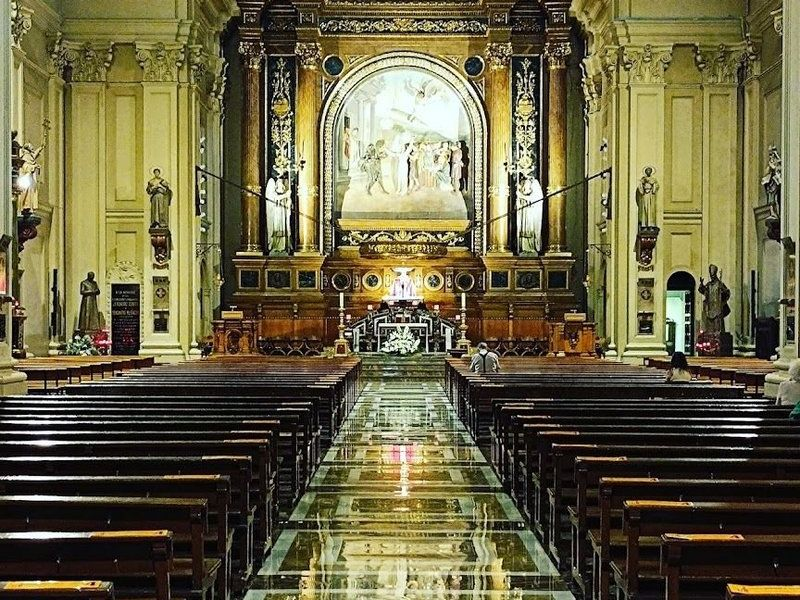
Basílica of Santa Engracia Church
The Basílica of Santa Engracia Church is a example of ornate Catholic architecture, originally constructed in 1511 and completed by 1517. This remarkable structure underwent renovations in the 18th century, showcasing an impressive facade adorned with intricate medallions and sculptures representing various saints. Inside, visitors can explore its captivating crypt housing ancient sarcophagi from the 1st century, which are remnants of early Christian artistry.
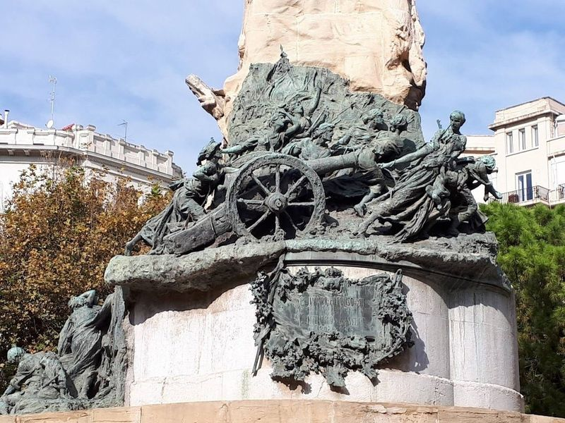
Plaza de los Sitios de Zaragoza
Plaza de los Sitios in Zaragoza is a bustling square featuring craft fairs and flea markets, as well as a 1908 sculpture of key historical figures. The square is home to the Museo de Zaragoza, housed in a neo-Renaissance building constructed for the Hispano-French Exposition. It also boasts a picturesque inner city park with a delightful fountain and two children's play areas.
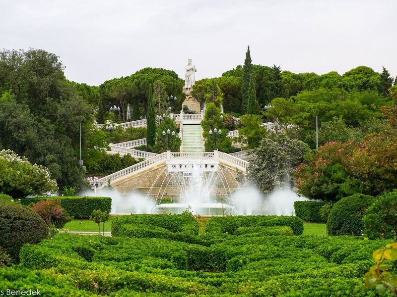
Parque Grande José Antonio Labordeta
Parque Grande José Antonio Labordeta is a sprawling city park in Zaragoza, offering a serene escape from urban life. It features botanical gardens, sculptures, and fountains, as well as amenities like cafes and bicycle rentals. The park spans over 40 hectares and boasts around 15 fountains, a botanic garden, viewpoints, terraces, paths, statues, and even a swimming pool for the summer months.
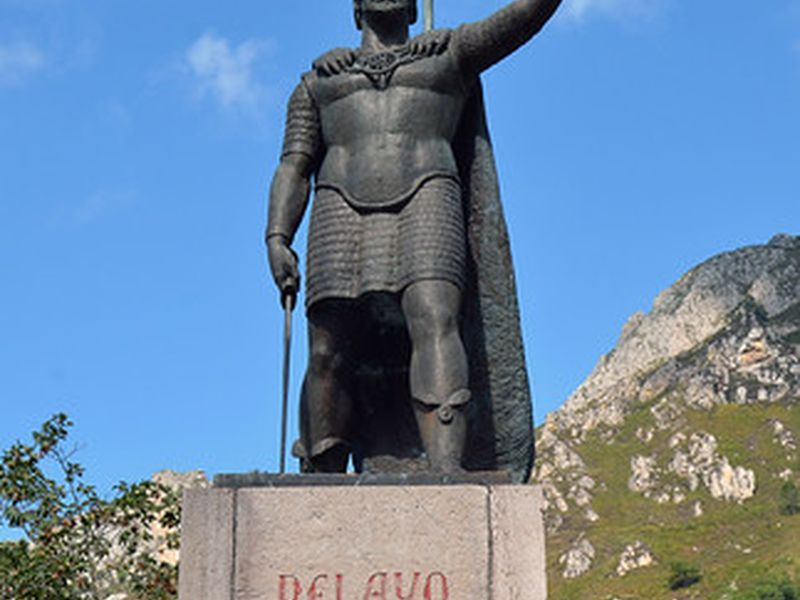
Monument to King Alfonso I the Battler
A monument honoring King Alfonso I, an important figure in Spanish history, known for his victories during the Reconquista. The site forms part of Monument to King Alfonso I the Battler's documented civic and cultural landscape within Zaragoza, with archives and visitor information available from municipal or regional heritage authorities.
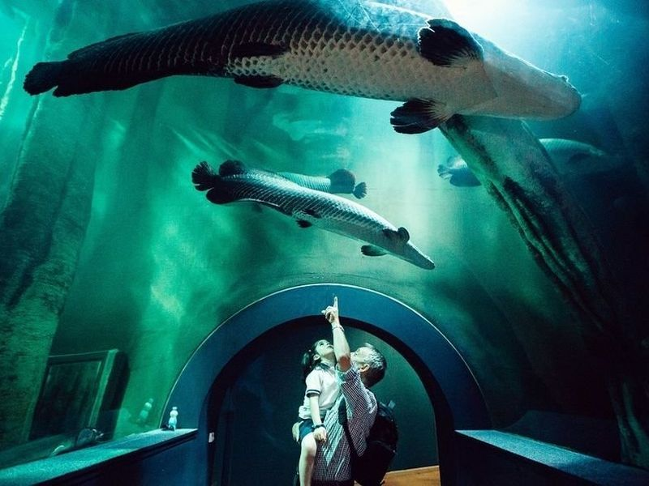
Aquarium River of Zaragoza
The Aquarium River of Zaragoza, originally part of the Expo 2008 venue, now offers a green space with wild nature just minutes from the city center. Visitors can enjoy modern buildings from the exhibition alongside the natural meander of the Ebro. The aquarium is known as Europe's largest river aquarium and houses 4,000 animals from major rivers worldwide.